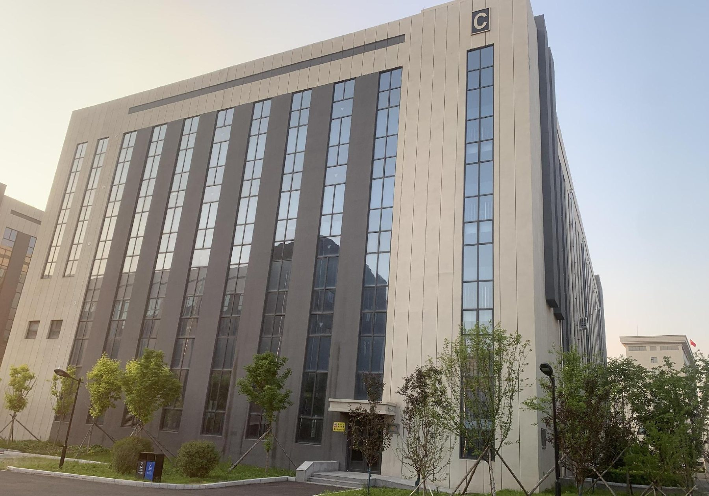
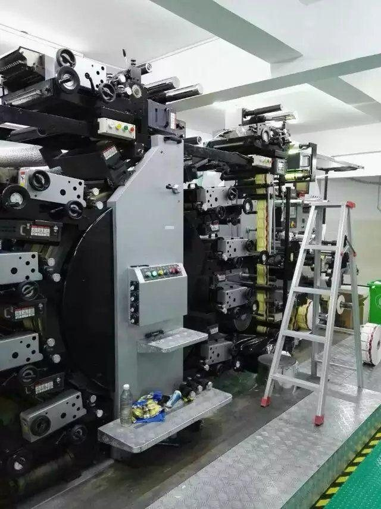
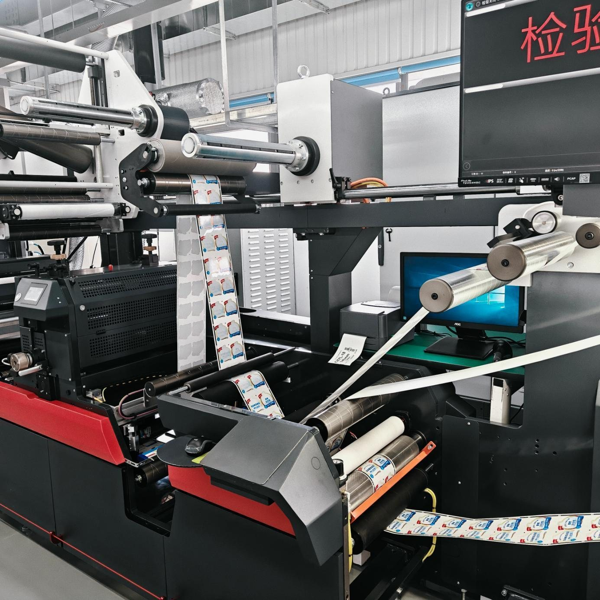
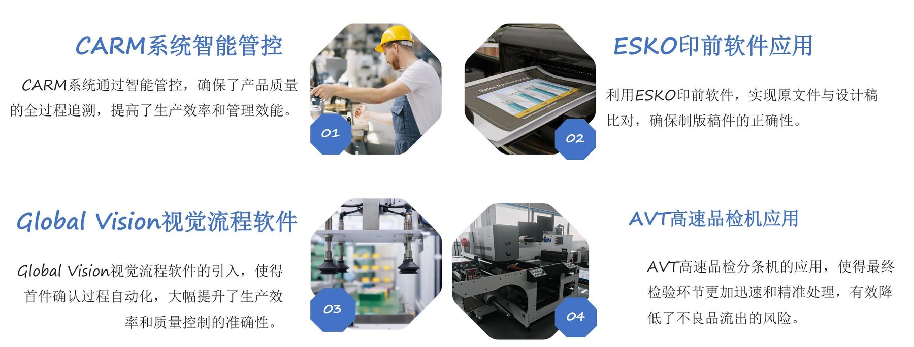
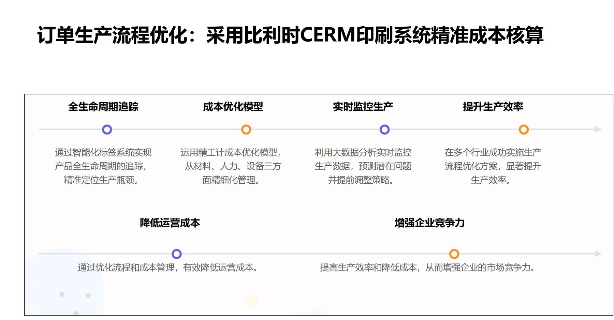
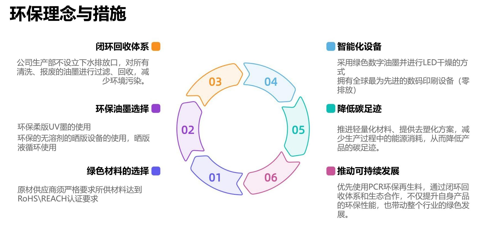

Hefei · 业务与设计中心
合肥公司
合肥市高新区
龙湖光年中心 3410 室
负责客户对接、标签方案设计、印前文件处理与订单跟单。
合肥作为业务与设计中心对接客户，上海工厂承担制造， 华东客户可就近安排验厂、打样与交付。
合肥市高新区
龙湖光年中心 3410 室
负责客户对接、标签方案设计、印前文件处理与订单跟单。

上海市金山区枫泾镇
钱明东路 915 号 C1 栋
柔印与凸版主力产能所在，承担华东区域订单、长单与紧急单生产，配套模切、分切与品检。
可同时完成在线覆膜模切、丝印、冷烫、多种不同材质的复合、胶面印刷、 在线检测与在线喷码——一张标签上的多道工序，一次走完。




多工艺连线，减少厂外流转与二次对位误差
纸、膜、金属箔复合；胶面可印刷，适配透明瓶体
常见印刷缺陷可自动识别剔除；可变信息逐张喷印
食品类标签独立生产，异物控制与批次追溯分离管理
借助 CERM 印刷管理系统与 ESKO 印前软件，报价、拼版、排产、质检记录全部线上流转。 对客户来说最直接的变化是两件事：报价更快更准，急单能优先插排。


标签是消耗品，但它承载的信息不是。一个模糊的批号，可能让整批货退回来。
面材、胶水、油墨进厂逐批检验，粘性、厚度、离型力不符合要求直接退料。
用 Global Vision 对文件与客户样稿逐字比对，条码逐个验码，避免印出来才发现错字。
印刷过程中在线检测套印、漏印、脏点；可变数据逐张核对，异常自动标记。
按批次抽检出标顺畅度、模切精度、卷绕张力与接头数量，扫码枪实测识读率。
第五道关卡是留档：每批订单的生产参数、检测记录与留样都归档，客户后续补单或出现问题时可直接追溯。

上海工厂可预约参观，现场看印刷、检测与分切的实际运行。